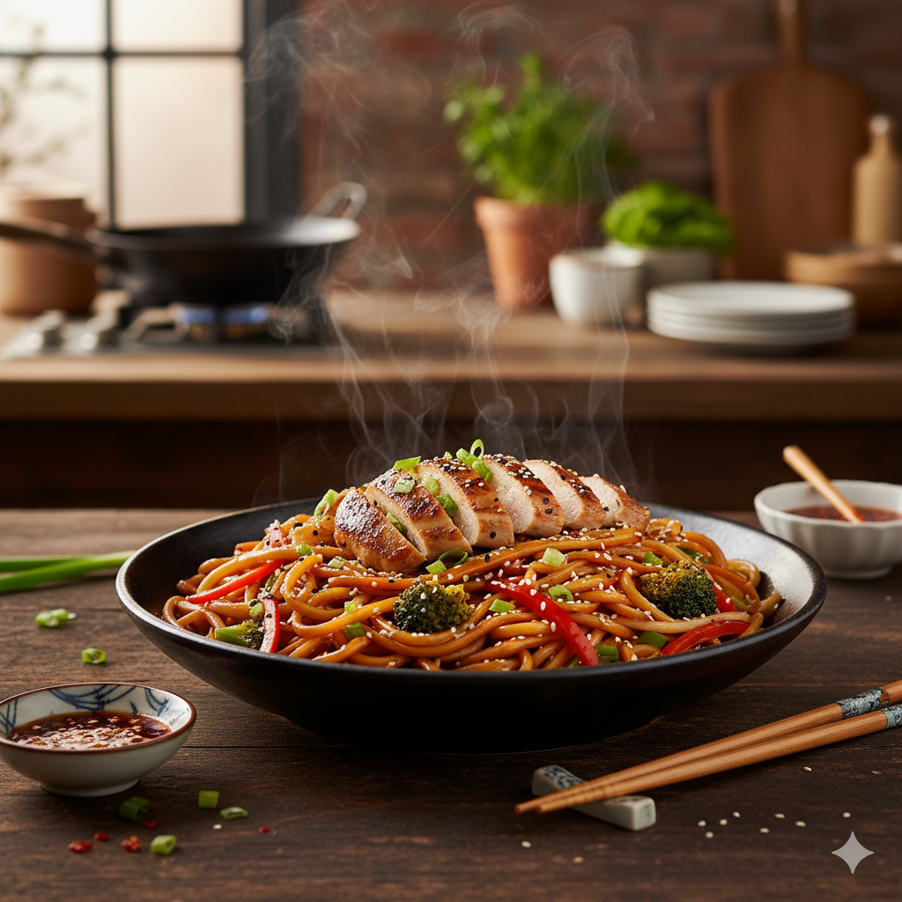

Home
Noodles Recipes

Noodles
This versatile noodle dish is a quick and satisfying meal, perfect for a busy weeknight. It features stir-fried noodles with crisp vegetables and tender slices of chicken (or your preferred protein), all tossed in a savory sauce.
The beauty of this recipe lies in its adaptability; feel free to swap out vegetables or proteins based on what you have on hand, making it a truly customizable dish. It's a fantastic way to enjoy a burst of fresh flavors and textures in a single bowl.
ingredients
- 8 oz egg noodles or ramen noodles (without seasoning packets)
- 1 tbsp sesame oil
- 1 tbsp vegetable oil
- 1 lb boneless, skinless chicken breast or thighs, thinly sliced
- 1 head broccoli, cut into small florets
- 1 red bell pepper, thinly sliced
- 1 green bell pepper, thinly sliced
- 2 cloves garlic, minced
- 1 tbsp fresh ginger, grated
- 2 green onions, sliced (for garnish)
- Sesame seeds (for garnish)
Steps
- Cook Noodles: Cook the noodles according to package directions. Drain and toss with 1 tbsp sesame oil to prevent sticking. Set aside.
- Prepare Sauce: In a small bowl, whisk together soy sauce, oyster sauce (if using), brown sugar, rice vinegar, cornstarch, and water until smooth. Set aside.
- Cook Chicken: Heat vegetable oil in a large skillet or wok over medium-high heat. Add the sliced chicken and stir-fry until cooked through and lightly browned, about 5-7 minutes. Remove chicken from the skillet and set aside.
- Stir-fry Vegetables: Add the broccoli florets to the same skillet and stir-fry for 3-4 minutes until slightly tender-crisp. Add the red and green bell peppers, minced garlic, and grated ginger. Stir-fry for another 2-3 minutes until vegetables are tender-crisp.
- Combine Ingredients: Return the cooked chicken to the skillet with the vegetables. Add the cooked noodles.
- Add Sauce: Give the sauce a quick whisk (as cornstarch can settle) and pour it over the noodles, chicken, and vegetables.
- Toss and Serve: Toss everything together for 1-2 minutes until the noodles and ingredients are well coated with the sauce and heated through.
- Garnish: Remove from heat. Garnish with sliced green onions and sesame seeds before serving.